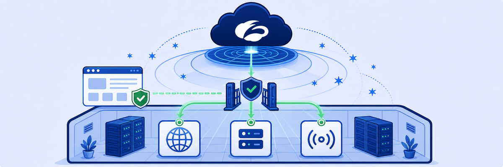

THINK FIRST · APP SEGMENTS
ZPA App Segments define which internal resources (by domain/IP + port) are accessible via ZPA. Until you create an App Segment, ZPA has no idea what's "behind" the connector — and no access policy can reference it. Application Discovery helps admins find what apps the connector can actually reach.
- A wildcard Discovery segment (*.labtenant.com) enables Application Discovery. What risk exists in exposing a wildcard segment to all ZPA users before you have specific access policies in place?
- You create an Intranet app segment on port 80 and an access policy allowing student to access it. The user can reach the intranet site in a browser, but ping times out. Why — and what do you need to change?
- ZPA access policies use identity (username, group) rather than IP address as the primary selector. Why is this a fundamental shift from traditional network-based access control, and what does it enable?
Lab 10: ZPA App Segments & Discovery
LAB 10
Scenario: With the App Connector running, you'll create a wildcard Discovery segment to identify available internal apps, then create a specific Intranet segment to enable browser access to the intranet site, add an access policy, and finally enable ICMP for ping connectivity.

Task 10.1 — Create a Discovery App Segment
1 Navigate to App Segments and verify connector is connected
- In the ZPA Admin Console, navigate to Applications → App Segments.
- Confirm the App Segments list is currently empty.
- Verify in Infrastructure → App Connectors that the connector status is Connected.

App Segments page — empty at the start. No segments means ZPA cannot route any private application traffic yet.

App Connector Connected — the data centre is reachable via ZPA. Now create segments to define what's accessible.
2 Add the Discovery App Segment
- Click Add Application Segment.
- Set Name to
Discovery. - Set Domain to
*.labtenant.com. - Add common port ranges (80, 443, 8080, etc.) to the segment.
- Assign App Connector Groups: On-Prem.
- Enable Application Discovery in the segment settings.
- Click Save.

Discovery segment with *.labtenant.com wildcard — covers all internal services under the lab domain for discovery purposes.

Wildcard domain — the Discovery segment uses *.labtenant.com to capture all private app DNS queries under this parent.

Port ranges for the Discovery segment — common ports that the App Connector will probe to discover running services.

On-Prem connector group assigned — the connector group determines which connector handles traffic for this segment.

Discovery segment review — wildcard domain, common ports, Application Discovery enabled, On-Prem connector group.
3 Create an Access Policy for Discovery
- In Policy → Access Policy, click Add Rule.
- Set action to Allow and add the Discovery app segment as the criteria.
- Scope to the appropriate users or groups.
- Click Save.

Access policy criteria — select the Discovery app segment to build a rule that allows access to it.

Discovery segment selected as the access policy criteria — only users matching this rule can use the Discovery segment.

Access policy for Discovery — allow access to the wildcard Discovery segment for the specified users.
4 View discovered applications
- Navigate to Analytics → Applications.
- View the discovered applications dashboard — private apps the connector has identified within *.labtenant.com.

Application Discovery enabled on the segment — the connector actively probes reachable services and reports them to ZPA analytics.

Discovered Applications dashboard — ZPA has identified which private services are reachable through the connector, with connection counts.

Discovery history over 14 days — shows private app activity trends as the connector observes traffic patterns.
Task 10.2 — Create the Intranet App Segment and Access Policy
1 Add the Intranet App Segment
- Click Add Application Segment.
- Set Name to
Intranet. - Set Domain to
intranet.labtenant.com. - Add port
80(HTTP) to the port ranges. - Assign Server Group: Corp Servers and App Connector Groups: On-Prem.
- Click Save.

Intranet segment — specific domain (not wildcard), port 80, scoped to the Corp Servers server group.

Port 80 (HTTP) — the intranet site is HTTP only at this stage; HTTPS and ICMP are not yet included.

App Connector Group: On-Prem assigned — traffic to intranet.labtenant.com routes through the on-premises connector.

Corp Servers server group — defines the back-end server targets that the App Connector can reach for this segment.

Server Group defines the IP addresses/servers the App Connector will proxy requests to for the Intranet segment.
2 Create an Access Policy for the Intranet segment
- In Policy → Access Policy, click Add Rule.
- Add criteria: App Segment = Intranet.
- Add user criteria: Login Name =
student@<Student FQDN>. - Set Action to Allow, then Save.

Access policy criteria — select App Segment or App Segment Groups to scope the rule to the Intranet segment.

Intranet segment selected as access policy criteria — this rule controls who can reach intranet.labtenant.com.

User Session Attributes — use Login Name to target the specific student identity rather than an IP range.

Login Name = student@FQDN — identity-based access control: the policy follows the user, not the network.

Complete policy criteria: Intranet segment + student Login Name — both conditions must match for access to be allowed.

Allow access policy form complete — Allow action, Intranet segment, student identity criteria.
3 Verify intranet access in the browser
- On the Corp: Client PC, navigate to
http://intranet.labtenant.com. - The internal intranet site should load — ZPA is proxying the request through the App Connector.
- Attempt
ping intranet.labtenant.com— it should time out (ICMP not yet configured).

Intranet site accessible via browser — ZPA routes HTTP (port 80) through the App Connector to the internal web server.

Ping times out — ICMP is not in the Intranet segment's port ranges yet. HTTP works; ICMP does not.
Task 10.3 — Enable ICMP Access to the Intranet Segment
1 Add ICMP to the Intranet segment
- In Applications → App Segments, click the Intranet segment to edit it.
- Navigate to the TCP/UDP Port Ranges section and add an ICMP entry (or enable the ICMP option if present).
- Click Save.

Intranet segment policies — the Allow Intranet access policy is linked. Add ICMP port range to enable ping connectivity.

Policies step in the segment wizard — review that the correct access policy is associated before saving.
2 Verify ping now works
- Run
ping intranet.labtenant.comin Command Prompt. - Ping should now receive replies — confirming ICMP is routed through ZPA.

Intranet browser + ZCC side-by-side — ZPA Private Access is ON, and the intranet site is accessible including ICMP after adding ICMP to the segment.
3 Check ZPA connector status and analytics
- In Infrastructure → App Connectors, verify the connector status shows the update activity.
- Navigate to Analytics → Private Applications → Search to view private app access logs.

App Connector status after segment changes — the connector picks up the updated segment configuration from ZPA cloud.

Private Applications analytics — ZPA logs every private app access event with user identity, app segment, and timing.
MENTAL NOTE
ZPA access requires three objects in sequence: (1) App Segment — defines the domain/IP + ports the connector can reach; (2) Access Policy — defines who (by identity) can access that segment; (3) ICMP must be explicitly added to port ranges — it's not included in TCP/UDP port configurations. Application Discovery uses a wildcard segment to auto-detect what's running; always scope it to admins only to prevent unintended broad access.
ASK A QUESTION
ADD A NOTE